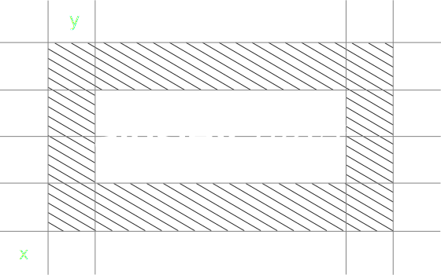

This is the ainsley.dev logo. It is our primary graphic device and should be the first choice when choosing a graphic element to represent the ainsley.dev brand. Please do not edit, change, distort, recolour or reconfigure the logo.
Our logo should always be all black, all white, or white symbol with black word mark and vice versa. It never takes on any additional colours, and cannot be placed on top of any colour within the ainsley.dev brand palette.
Appropriate spacing should be placed around the logo.
